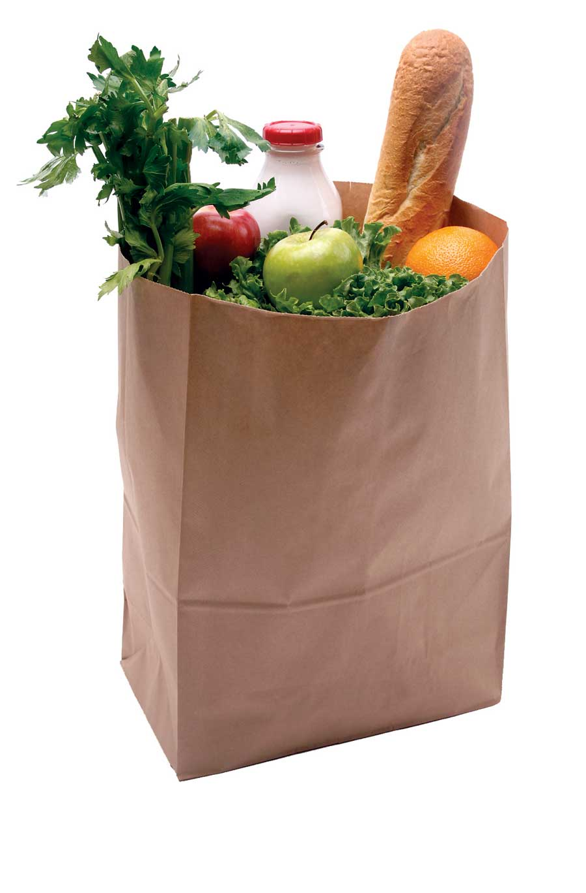

LocalHarvest, the premier website dedicated to connecting people with fresh food from farmers markets, community supported agriculture organizations (CSAs), farm stands and u-pick produce in their area, is asking for help in expanding its online database.
A CSA is an organization to which members “subscribe” in order to receive a selection of produce and other products at pre-determined intervals during the growing season. According to the 2007 U.S. Agricultural Census, 12,549 farmers reported that they marketed their products through a CSA. While that may not represent the total number of CSAs nationwide, it certainly hints that there are more than the nearly 3,000 currently listed with LocalHarvest. If you know of a CSA that’s not on it, let LocalHarvest know by filling out their form.
Get the word out! You’ll be securing free (yet priceless) visibility for the CSA(s), and as an added bonus, the person who contributes the most new CSAs before Sept. 30 will receive a $100 gift certificate to spend on any of the more than 5,000 products in the LocalHarvest online catalog.
Founded in 1998, LocalHarvest encourages the development of sustainable food systems that provide more nutritious food.
|
 ISTOCKPHOTO Subscribe to a community supported agriculture organization, and look forward to your share of nature’s bounty while supporting local farmers. |
|
|